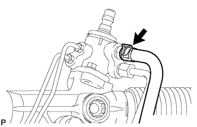
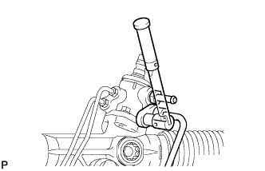
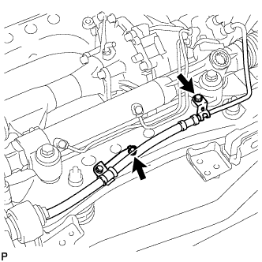
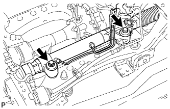

STEERING GEAR > REMOVAL |
| 1. PLACE FRONT WHEELS FACING STRAIGHT AHEAD |
| 2. REMOVE FRONT WHEELS |
| 3. REMOVE ENGINE ASSEMBLY |
Remove the engine assembly (Click here).
| 4. DISCONNECT NO. 2 STEERING INTERMEDIATE SHAFT |
Disconnect the No. 2 steering intermediate shaft (Click here).
| 5. DISCONNECT TIE ROD END SUB-ASSEMBLY LH |
 |
Using SST, disconnect the tie rod end assembly.
| 6. DISCONNECT TIE ROD END SUB-ASSEMBLY RH |
| 7. DISCONNECT PRESSURE FEED TUBE ASSEMBLY |
|  |
Remove the clamp and disconnect the pressure feed tube (return tube side) from the steering gear.
|  |
Using a union nut wrench, disconnect the pressure feed tube (pressure feed tube side) from the steering gear.
|  |
Remove the 2 bolts and disconnect the pressure feed tube clamp.
| 8. REMOVE RACK AND PINION POWER STEERING GEAR ASSEMBLY |
|  |
Remove the 2 bolts, 2 nuts, 2 washers and steering gear assembly.